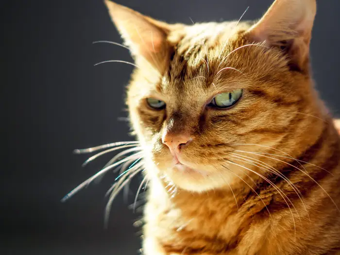
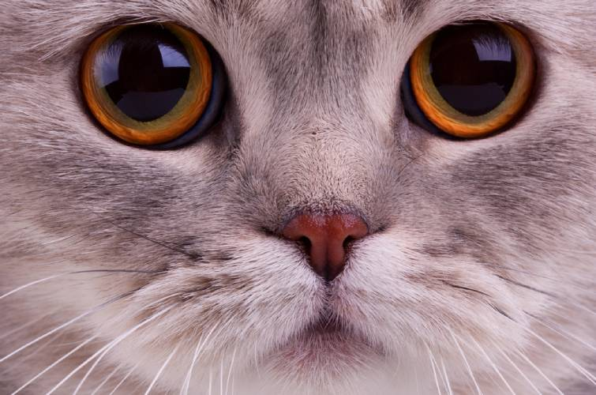

 Сімейство котячих включає в себе таких гігантів, як тигр, ягуар, лев, леопард, сніговий барс (ірбіс), каракал, гепард, кілька видів рисей. А деякі види порівнянні за розміром з домашньою кішкою: манул, хаос (очеретяний кіт), лісовий кіт, степова кішка, оцелот і др. На території Росії мешкають 12 видів. Кішка лісова нагадує смугасту домашню кішку, але у неї більш міцну статуру і пухнастий смугастий хвіст. Вона населяє лісові простору, густо порослі чагарником. Зустрічається колись лісова кішка була широко поширена в Європі. В даний час лісова кішка включена в список зникаючих видів і в більшості місць Європи зустрічається вкрай рідко. Її винищення лісниками і мисливцями в ХХ столітті стало причиною максимального скорочення чисельності. Кішка Жоффруа - це лісовий хижак, який живе в непролазних хащах тропічних лісів. Хутро цієї кішки високо цінувався на всіх хутряних ринках, а в результаті чого сильно скоротилася популяція цього виду. Попит на шкуру цієї тварини зріс після того, як була заборонена полювання на інші плямистих кішок. Помісь кішки Жоффруа з домашньою називається кішкою-сафарі. Барханна кішка дуже схожа на домашню кішку. Однак вона дрібніша своїй домашній родички. Особливість цієї кішки-підошви, суцільно вкриті густою шерстю. Густа шерсть оберігає її лапи від опіків і допомагає їй пересуватися по хиткому піску.
 Котячі - це найбільш досконалий тип хижих. Подібного відповідності між будовою кінцівок і тулуба, подібної пропорційності всіх частин тіла ми не зустрінемо в інших хижих тварин. Кожна окрема частина тіла кішок красива і вишукана. Всі котячі - хижаки і харчуються тільки м'ясом. У них гострі кігті і сильні щелепи з довгими іклами, з їх допомогою кішки вбивають і розривають здобич. Кігті у багатьох кішок втягуються, звірі прибирають їх всередину лапи. Ця властивість дозволяє кігтям щоразу. Вуса кішок - видозмінені волосся, біля основи яких знаходяться нервові закінчення, і тому вони надчутливі до дотику. Якщо відрізати у кішки вуса, то цим поставиш її у вкрай неприємне становище: вона робиться безпорадною, виявляє помітне занепокоєння і непевність, які в міру відростання вусів пропадають. Великі чуйні вуха вловлюють звуки, недоступні людському вуху. Вони чують найменший шерех на великій відстані і правильно оцінюють його походження. Вони розрізняють саме обережне, незначне шурхіт грунту під ногами тваринного і можуть за допомогою слуху знаходити здобич, навіть не бачачи її, хоча вушні раковини у них рідко бувають великими. Зіниці круглих очей розширюються, для того щоб впустити максимальну кількість світла. Відбиває шар на дні очі підсилює світло. Котячий хвіст - кращий, "прилад" для оцінки настрою тварини. Характер і сила емоцій кішки чудово зчитується за показаннями цього "вимірювача". Кінчик хвоста кішки означає, що у кішки нервове і занепокоєне стан. Відчуваючи досаду, гнів або бойовий запал, тварина стане бити хвостом по землі або по підлозі, а, злякавшись, опустить його або затисне між задніми лапами. Зате хвіст, зведений догори, подібно бойового прапора, показує добре і веселий стан вихованця. Котячі - швидкі і вправні мисливці. Вони можуть підстерігати здобич із засідки, можуть переслідувати її або повільно підкрадатися до неї. Зазвичай вони полюють вночі і бачать у темряві приблизно в 6 разів краще, ніж людина. Щонайменше, година в день, кішки присвячують свого туалету, вилизуючи хутро шорстким, як, терка, мовою. Це процедура допомагає їм охолоджувати тіло в жарку погоду. Коли вона п'є, то загинає мова гачком і швидко закидає їм краплі рідини в рот. Кішка не сьорбає воду, а хлепче. У дорослої кішки 30 зубів. Кішки сплять вдвічі більше за інших ссавців, проводячи три чверті доби уві сні. Типовим представником сімейства котячих є домашня кішка. Вважають, що домашня кішка сталася від невеликої дикої кішки, що живе в Африці. До 2000 року. до н. е. вона була приручена стародавніми єгиптянами.
Єгиптяни вважали, що кішка - священна тварина. За її вбивство
загрожувало
суворе покарання аж до страти. Якщо кішка вмирала, в сім'ї оголошували
траур. Вивозити цих милих тваринок за межі Єгипту суворо заборонялося.
Фінікійські мореплавці дуже цінували кішок як умілих винищувачів мишей і
щурів на кораблях і, користуючись будь-яким зручним випадком, викрадали
маленьких мисливиць з Єгипту. Спочатку кішки з'явилися на фінікійських
торгових шляхах, а потім поширилися по всьому світу. Їх можна було
зустріти
і в Греції, і в Індії, і в Китаї.
У Тибеті кішки століттями користувалися для охорони храмових скарбів і
справлялися із завданням чудово: жоден злодій не міг підкрастися до них
непоміченим. Відчувши чужого, тварини піднімали таке завивання, що
зловмисник поспішав забратися по добру - поздоровну.
У Стародавньому Китаї кішка, як дуже корисне в господарстві тварина,
коштувала недешево. При її покупці консультувалися з експертом. За
особливостями будови тіла фахівець робив висновки про те, наскільки
успішно
кішка буде винищувати мишей. Він, зокрема, звертав увагу на розмір
голови і
вух, на довжину і товщину хвоста. Великі і добре розвинені вуха,
погойдуються при русі, припускали відмінний слух і постійну готовність
до
полювання. Хвіст цінувався довгий і тонкий. Власники ж товстого і
малорухливого хвоста вважалися ледачими.
Велике значення надавалося вірності кішки своєму господареві. Якщо вона
йшла
на чужу територію, то її не можна було повернути. Зазвичай тварина
саджали
на довгий повідець.
Ієрогліф "мао" означає два поняття: "кішка" і "вісімдесятиріччя". Тому
кішка
в Китаї - символ довголіття; її часто зображують на вітальних листівках
до
дня народження.
До Японії кішки потрапили з Китаю. Перший звірятко приплив разом з
ченцем,
який віз будистські рукописи. Кішку взяли на корабель з метою захистити
дорогоцінні сувої від гризунів. Повинно бути, саме тому першою
"службовим
обов'язком" кішок у Японії стала охорона монастирських бібліотек. Довгий
час
ці тварини в Країні висхідного сонця були буквально облуплених, і
коштували
дуже дорого. Знаком особливого розташування вважалося, якщо імператор
підносив у подарунок комусь із наближених кішку, вирощену в палаці.
Звірят
тримали на повідках і годували з золотою і срібною посуду.
На Американський континент домашня кішка була завезена з Європи.
Таким чином, домашня кішка стає безпосереднім об'єктом розведення з
другої
половини дев'ятнадцятого століття. Послідовним схрещуванням люди
створювали
нові породи, які відрізнялися один від одного розміром, кольором,
статурою